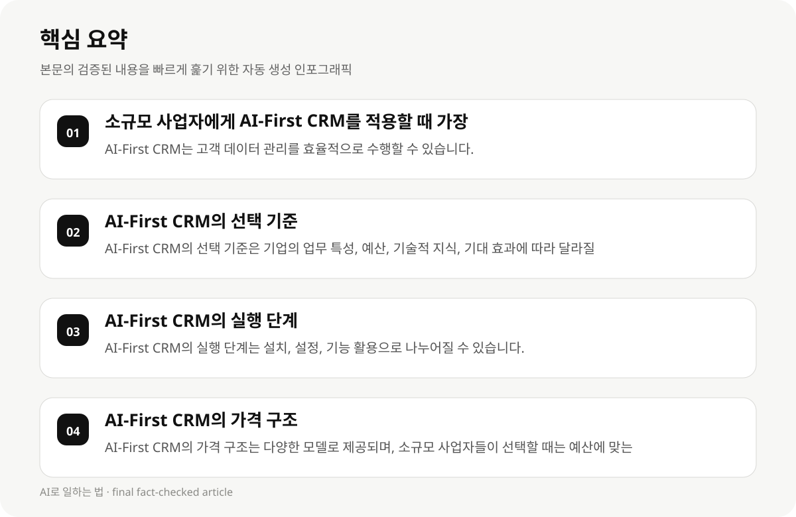

소규모 사업자에게 AI-First CRM를 적용할 때 가장 중요한 고려 사항 #
소규모 사업자들이 AI-First CRM를 적용할 때 가장 먼저 고려해야 할 것은 기업의 업무 특성과 목표입니다. 예를 들어, 고객 관계 관리, 데이터 관리, 자동화된 워크플로우 등에 대한 필요성이 높은 기업은 AI-First CRM를 선택할 때 기술적 지식이 부족할 수 있습니다.
AI-First CRM는 고객 데이터를 자동으로 캡처, 업데이트, 분석하여 고객 관계 관리를 실현할 수 있습니다. 그러나 소규모 사업자들이 선택할 때는 기술적 지식이 부족할 수 있어, 기업의 업무 특성과 목표에 맞는 적합한 솔루션을 고려해야 합니다.
- AI-First CRM는 고객 데이터 관리를 효율적으로 수행할 수 있습니다.
- 소규모 사업자들이 AI-First CRM를 선택할 때는 기업의 업무 특성과 목표에 맞는 솔루션을 고려해야 합니다.
- AI-First CRM의 실행 단계는 기술적 지식이 부족한 소규모 사업자에게는 복잡할 수 있습니다.
AI-First CRM의 선택 기준 #
AI-First CRM의 선택 기준은 기업의 업무 특성, 예산, 기술적 지식, 그리고 기대되는 효과에 따라 달라질 수 있습니다. 예를 들어, 고객 데이터 관리가 중요한 기업은 데이터 관리의 복잡성을 줄이고 고객 경험을 향상시키는 데 도움을 줄 수 있는 AI-First CRM를 선택해야 합니다.
소규모 사업자들이 AI-First CRM를 선택할 때는 기술적 지식이 부족할 수 있으므로, 기업의 업무 특성과 목표에 맞는 적합한 솔루션을 고려해야 합니다. 또한, AI-First CRM의 가격 구조와 예산에 맞는 맞춤형 솔루션을 고려해야 합니다.
- AI-First CRM의 선택 기준은 기업의 업무 특성, 예산, 기술적 지식, 기대 효과에 따라 달라질 수 있습니다.
- 소규모 사업자들이 AI-First CRM를 선택할 때는 기술적 지식이 부족할 수 있으므로, 기업의 업무 특성과 목표에 맞는 적합한 솔루션을 고려해야 합니다.
- AI-First CRM의 가격 구조는 다양한 모델로 제공되며, 소규모 사업자들이 선택할 때는 예산에 맞는 옵션을 고려해야 합니다.
AI-First CRM의 실행 단계 #
AI-First CRM의 실행 단계는 다음과 같은 단계로 나누어질 수 있습니다: 첫 번째로는 AI-First CRM를 설치하고 설정하는 단계입니다. 이 단계에서는 기업의 업무 특성에 맞는 솔루션을 선택하고, 데이터 관리, 고객 관계 관리, 자동화된 워크플로우 등에 대한 설정을 진행해야 합니다.
두 번째로는 AI-First CRM의 기능을 활용하는 단계입니다. 예를 들어, 고객 데이터를 자동으로 캡처하고 업데이트하는 기능을 활용하여 업무 효율성을 높일 수 있습니다. 또한, AI-First CRM의 분석 기능을 활용하여 고객 경험을 향상시키는 데 도움을 줄 수 있습니다.
- AI-First CRM의 실행 단계는 설치, 설정, 기능 활용으로 나누어질 수 있습니다.
- AI-First CRM의 기능 활용은 고객 데이터 관리, 자동화된 워크플로우, 분석 기능 등을 통해 업무 효율성을 높일 수 있습니다.
- AI-First CRM의 실행 단계는 기술적 지식이 부족한 소규모 사업자에게는 복잡할 수 있습니다.

AI-First CRM의 가격 구조 #
AI-First CRM의 가격 구조는 다양한 모델로 제공되며, 소규모 사업자들이 선택할 때는 예산에 맞는 옵션을 고려해야 합니다. 예를 들어, 기업이 고객 데이터 관리를 효율적으로 수행하고자 할 경우, 데이터 관리의 복잡성을 줄이고 고객 경험을 향상시키는 데 도움을 줄 수 있는 AI-First CRM를 선택해야 합니다.
AI-First CRM의 가격 구조는 기업의 업무 특성, 예산, 기술적 지식, 기대 효과에 따라 달라질 수 있습니다. 따라서 소규모 사업자들이 AI-First CRM를 선택할 때는 예산에 맞는 옵션을 고려해야 합니다.
- AI-First CRM의 가격 구조는 다양한 모델로 제공되며, 소규모 사업자들이 선택할 때는 예산에 맞는 옵션을 고려해야 합니다.
- AI-First CRM의 가격 구조는 기업의 업무 특성, 예산, 기술적 지식, 기대 효과에 따라 달라질 수 있습니다.
- AI-First CRM의 가격 구조는 소규모 사업자들이 선택할 때는 예산에 맞는 옵션을 고려해야 합니다.
AI-First CRM의 효과와 한계 #
AI-First CRM의 효과는 시간이 지나면서 점차 나타나며, 초기 적용 시에는 기대치와 실제 결과가 차이가 있을 수 있습니다. 예를 들어, 고객 데이터 관리의 복잡성을 줄이고 고객 경험을 향상시키는 데 도움을 줄 수 있는 AI-First CRM의 효과는 시간이 지나면서 점차 나타나며, 초기 적용 시에는 기대치와 실제 결과가 차이가 있을 수 있습니다.
AI-First CRM의 한계는 기술적 지식이 부족한 소규모 사업자에게는 복잡할 수 있습니다. 또한, AI-First CRM의 실행 단계는 기술적 지식이 부족할 수 있는 소규모 사업자에게는 복잡할 수 있습니다.
- AI-First CRM의 효과는 시간이 지나면서 점차 나타나며, 초기 적용 시에는 기대치와 실제 결과가 차이가 있을 수 있습니다.
- AI-First CRM의 한계는 기술적 지식이 부족한 소규모 사업자에게는 복잡할 수 있습니다.
- AI-First CRM의 실행 단계는 기술적 지식이 부족할 수 있는 소규모 사업자에게는 복잡할 수 있습니다.
AI-First CRM의 실전 활용 사례 #
AI-First CRM의 실전 활용 사례는 다음과 같습니다: 예를 들어, 소규모 사업자가 고객 데이터 관리를 효율적으로 수행하고자 할 경우, AI-First CRM의 데이터 관리 기능을 활용하여 고객 데이터를 자동으로 캡처하고 업데이트하는 데 도움을 줄 수 있습니다.
AI-First CRM의 실전 활용 사례는 기업의 업무 특성, 예산, 기술적 지식, 기대 효과에 따라 달라질 수 있습니다. 따라서 소규모 사업자들이 AI-First CRM를 선택할 때는 기업의 업무 특성과 목표에 맞는 적합한 솔루션을 고려해야 합니다.
- AI-First CRM의 실전 활용 사례는 기업의 업무 특성, 예산, 기술적 지식, 기대 효과에 따라 달라질 수 있습니다.
- AI-First CRM의 실전 활용 사례는 고객 데이터 관리, 자동화된 워크플로우, 분석 기능 등을 통해 업무 효율성을 높일 수 있습니다.
- AI-First CRM의 실전 활용 사례는 소규모 사업자들이 선택할 때는 기업의 업무 특성과 목표에 맞는 적합한 솔루션을 고려해야 합니다.
AI-First CRM의 선택 기준과 실행 단계 #
AI-First CRM의 선택 기준은 다음과 같습니다: 기업의 업무 특성, 예산, 기술적 지식, 기대 효과에 따라 달라질 수 있습니다. 예를 들어, 고객 데이터 관리가 중요한 기업은 데이터 관리의 복잡성을 줄이고 고객 경험을 향상시키는 데 도움을 줄 수 있는 AI-First CRM를 선택해야 합니다.
AI-First CRM의 실행 단계는 다음과 같습니다: 첫 번째로는 AI-First CRM를 설치하고 설정하는 단계입니다. 이 단계에서는 기업의 업무 특성에 맞는 솔루션을 선택하고, 데이터 관리, 고객 관계 관리, 자동화된 워크플로우 등에 대한 설정을 진행해야 합니다.
AI-First CRM의 실행 단계는 기술적 지식이 부족한 소규모 사업자에게는 복잡할 수 있습니다.
- AI-First CRM의 선택 기준은 기업의 업무 특성, 예산, 기술적 지식, 기대 효과에 따라 달라질 수 있습니다.
- AI-First CRM의 실행 단계는 설치, 설정, 기능 활용으로 나누어질 수 있습니다.
- AI-First CRM의 실행 단계는 기술적 지식이 부족한 소규모 사업자에게는 복잡할 수 있습니다.
AI-First CRM의 가격 구조와 예산 고려 #
AI-First CRM의 가격 구조는 다양한 모델로 제공되며, 소규모 사업자들이 선택할 때는 예산에 맞는 옵션을 고려해야 합니다. 예를 들어, 기업이 고객 데이터 관리를 효율적으로 수행하고자 할 경우, 데이터 관리의 복잡성을 줄이고 고객 경험을 향상시키는 데 도움을 줄 수 있는 AI-First CRM를 선택해야 합니다.
AI-First CRM의 가격 구조는 기업의 업무 특성, 예산, 기술적 지식, 기대 효과에 따라 달라질 수 있습니다. 따라서 소규모 사업자들이 AI-First CRM를 선택할 때는 예산에 맞는 옵션을 고려해야 합니다.
- AI-First CRM의 가격 구조는 다양한 모델로 제공되며, 소규모 사업자들이 선택할 때는 예산에 맞는 옵션을 고려해야 합니다.
- AI-First CRM의 가격 구조는 기업의 업무 특성, 예산, 기술적 지식, 기대 효과에 따라 달라질 수 있습니다.
- AI-First CRM의 가격 구조는 소규모 사업자들이 선택할 때는 예산에 맞는 옵션을 고려해야 합니다.
AI-First CRM의 실전 활용 사례 #
AI-First CRM의 실전 활용 사례는 다음과 같습니다: 예를 들어, 소규모 사업자가 고객 데이터 관리를 효율적으로 수행하고자 할 경우, AI-First CRM의 데이터 관리 기능을 활용하여 고객 데이터를 자동으로 캡처하고 업데이트하는 데 도움을 줄 수 있습니다.
AI-First CRM의 실전 활용 사례는 기업의 업무 특성, 예산, 기술적 지식, 기대 효과에 따라 달라질 수 있습니다. 따라서 소규모 사업자들이 AI-First CRM를 선택할 때는 기업의 업무 특성과 목표에 맞는 적합한 솔루션을 고려해야 합니다.
- AI-First CRM의 실전 활용 사례는 기업의 업무 특성, 예산, 기술적 지식, 기대 효과에 따라 달라질 수 있습니다.
- AI-First CRM의 실전 활용 사례는 고객 데이터 관리, 자동화된 워크플로우, 분석 기능 등을 통해 업무 효율성을 높일 수 있습니다.
- AI-First CRM의 실전 활용 사례는 소규모 사업자들이 선택할 때는 기업의 업무 특성과 목표에 맞는 적합한 솔루션을 고려해야 합니다.